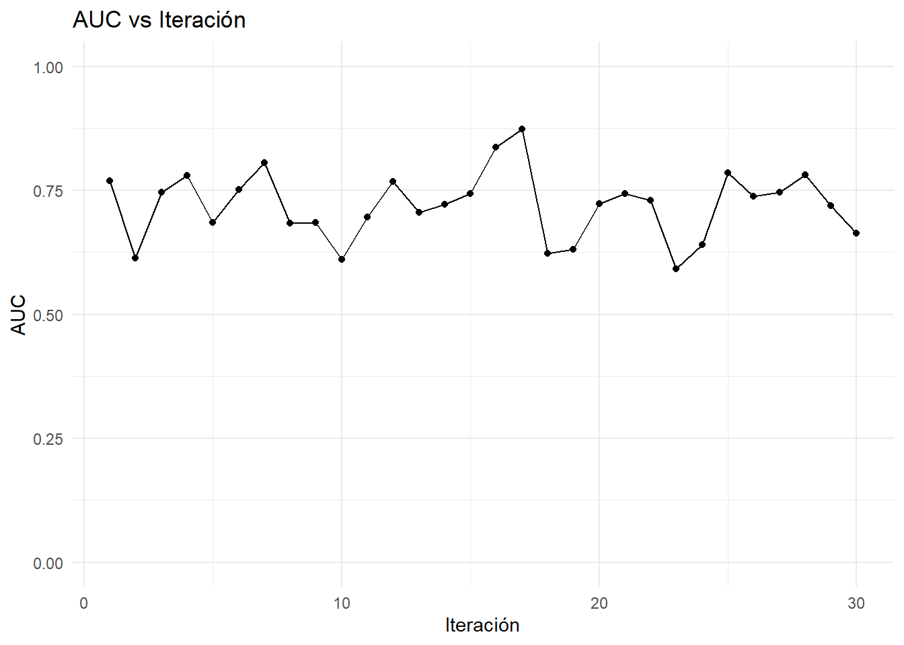

knitr::opts_chunk$set(cache =TRUE, # if TRUE knitr will cache the results to reuse in future knitsfig.width =7, # the width for plots created by code chunkfig.height =4, # the height for plots created by code chunkfig.align ='center', # how to align graphics in the final doc. 'left', 'right', 'center'fig.path ='figs/', # file path to the directory where knitr shall store the graphics filesresults ='asis', # knitr will pass through results without reformatting themecho =TRUE, # in FALSE knitr will not display code in the code chunk above it's resultsmessage =TRUE, # if FALSE knitr will not display any messages generated by codestrip.white =TRUE, # if FALSE knitr will not remove white spaces at the beg or end of code chunkwarning =FALSE) # if FALSE knitr will not display any warning messages in the final document
1 Introducción
1.1 Contexto
El cáncer de mama es el cáncer no cutáneo más común en las mujeres en los Estados Unidos, con una incidencia estimada de 310,720 casos de enfermedad invasiva y 42,250 defunciones durante 2024 («Exámenes de detección del cáncer de seno (mama) (PDQ®)», s. f.). Este problema de salud tiene una relevancia crítica debido a su impacto en la vida de las mujeres y en la sociedad en general.
La capacidad de anticipar la metástasis de un paciente de cáncer de mama es esencial, ya que permite una intervención temprana y potencialmente curativa. La acción rápida contra el cáncer, especialmente en sus etapas iniciales, es crucial para salvar vidas. De aquí surge la necesidad de desarrollar modelos predictivos basados en datos, los cuales pueden ofrecer una herramienta valiosa para identificar a los pacientes en riesgo de metástasis, permitiendo un diagnóstico y tratamiento tempranos.
Para los clínicos, la implementación de un modelo predictivo para predecir el estado PCR de los pacientes con cáncer de mama puede mejorar la precisión del diagnóstico, reduciendo el sobrediagnóstico y el sobretratamiento, lo cual es particularmente relevante dado que la detección temprana del cáncer de mama puede conducir a un sobrediagnóstico, donde se detectan cánceres que no representan una amenaza para la vida del paciente («Exámenes de detección del cáncer de seno (mama) (PDQ®)», s. f.). Por otra parte, estos modelos pueden ayudar a optimizar el uso de recursos, al permitir una asignación más eficiente de los tratamientos y exámenes, basada en la probabilidad de que un paciente progrese a metástasis. Tercero, pueden mejorar la calidad de vida de los pacientes al permitir un enfoque más personalizado del tratamiento, basado en su riesgo individual de metástasis.
1.2 Datos para la predicción de metástasis
Los modelos de machine learning que se utilizan para la predicción de metástasis en pacientes con cáncer de mama, principalmente, pueden trabajar con dos tipos de datos: imágenes (Figura 1) y datos numéricos de biopsias o de análisis clínicos del paciente. En este trabajo, nos enfocaremos en el uso de datos numéricos de biopsias para desarrollar nuestro modelo predictivo.
Figura 1: Radiografía de un seno con cáncer
1.3 Trabajos previos
Los modelos de machine learning han demostrado ser efectivos en la clasificación de la metástasis del cáncer de mama. Un estudio publicado en el National Center for Biotechnology Information (NCBI) exploró el uso de varios algoritmos de machine learning, incluyendo la regresión logística, y otros, para clasificar la metástasis del cáncer de mama utilizando datos de perfil sanguíneo. Los resultados mostraron que estos modelos lograron una precisión significativa en la clasificación de la metástasis del cáncer de mama, con algunos algoritmos alcanzando una precisión de hasta el 99% (Lakshmi 2023).
Otro estudio destacó el uso de un modelo de aprendizaje profundo, TabNet, para predecir la involucración del nódulo linfático sentinel (SLN) en pacientes con cáncer de mama basándose en características preoperatorias. La aplicación exitosa de machine learning en la predicción de la metástasis del SLN subraya la capacidad de estos modelos para mejorar la precisión del diagnóstico y el tratamiento del cáncer de mama (Shahriarirad 2024).
1.4 Metodología
Como se ha mencionado anteriormente, el principal objetivo de este estudio es el de desarrollar un modelo de regresión logística, que, en el mejor de los casos, demostrará un rendimiento mayor o igual al de un profesional a de la salud a la hora de determinar si un paciente podría tener metástasis, o no. Con este objetivo, se seguirán una serie de pasos:
Pre-procesamiento de los datos.
Validación inicial del modelo.
Establecimiento de medidas de rendimiento para la evaluación del modelo.
Establecimiento de procesos de validación interna para la evaluación del modelo.
Ingeniería de características.
Determinación del modelo final.
2 Pre-procesamiento de los datos
2.1 Justificación
Esta sección pretende abordar la etapa más crucial de todo el proceso de Machine Learning (ML), el curado de los datos, también conocido como pre-procesamiento. Este paso no es simplemente un prefacio al modelo predictivo, sino una fase determinante en la construcción de un modelo de aprendizaje automático robusto y eficaz.
Estas acciones previas al aprendizaje modelan los datos para minimizar distorsiones y anomalías, preservando la integridad del proceso de aprendizaje y fortaleciendo la precisión de los modelos predictivos resultantes, demostrando que la eficacia del modelo está intrínsecamente ligada a la calidad del preprocesamiento aplicado al conjunto de data original (Obaid, Dheyab, y Sabry 2019).
2.2 Análisis Exploratorio
El fichero de data crudos, facilitado por el Dr. José Manuel Jerez Aragonés, se trata de un fichero .csv con una serie de variables detalladas en la Figura 2.
Figura 2: Descripción de las variables.
Generalmente, se descartarían las variables que no guardan una obvia relevancia clínica con respecto a la variable objetivo (PCR), en este caso, la variable Muestra. Antes de eliminar esta variable, se puede observar que hay diferentes caracteres comunes a las muestras de varios pacientes, estos caracteres representan el estudio al que pertenece el dato, y esto sí que puede tener importancia clínica, ya que podría ayudarnos a comprender si los pacientes de un estudio determinado guardan algún tipo de relación estadística, introduciendo así un posible sesgo en los data cuya fuerza dependerá de la cantidad de pacientes de ese estudio concreto. Es por esto que se va a crear la variable Estudio.
Finalmente, se guardarán en un vector las variables cateóricas, y en otro, las numéricas. Este bloque se código se repetirá varias veces durante la limpieza de data, ya que la naturaleza de algunas variables puede cambiar.
Se puede apreciar una pequeña cantidad de valores indefinidos (I). Estos serán imputados con la moda. Adicionalmente, podemos observar que las clases principales de esta variable están muy desbalanceadas, por lo que en un futuro tal vez se debe tomar una decisión sobre si estos data pueden llegar a aportar algo a las conclusiones del proyecto.
La cantidad de muestras en T0 es demasiado baja, debido a esto, para que tengan algo de significancia, se combinarán con las de T1 para crear la nueva clase, T0-T1.
Código
# | echo: false# | message: false# | warning: false# | error: falsedata <- data %>%mutate(`Estadio`=recode(`Estadio`,`T0`="T1"))data <- data %>%mutate(`Estadio`=recode(`Estadio`,`T1`="T0-T1"))
Podemos observar que el criterio de clasificación ha marcado el tipo de estudio en otros para la mayoría de muestras. Se tendrá en cuenta este dato para futuros análisis.
Adicionalmente, se codificará la variable Grado como categórica con la finalidad de no dar más importancia a valores de grado más alto.
El conjunto de datos solo contiene dos variables numéricas, Edad y PCR. Para poder realmente sacar una conclusión de este apartado, he considerado que podría ser interesante comprobar si la distirbución de estas variables se mantiene similar independientemente del estudio llevado a cabo. Esto podría a comprender
# | label: fig-dist-estudio-edad# | fig.cap: "Distribución de la variable 'Edad' con respecto a 'Estudio'"# | out.width: '80%'# | fig.align: 'center'ggplot(data, aes(x = Estudio, y = Edad, fill = Estudio)) +geom_boxplot() +labs(title ="Distribución de Edad por Estudio",x ="Estudio",y ="Edad") +theme_minimal() +theme(legend.position ="none")
En el gráfico de barras generado en la parte superior podemos observar que la distribución de la variable edad se mantiene a lo largo de los estudios. No hay ningún estudio incluído en el conjunto de datos que presente un sesgo desmedido en esta variable. Se pueden observar aún así una cantidad razonable de valores atípicos en los grupos M y otros, sin embargo, podemos atribuir esto a que son los dos conjuntos más grandes, así que es más probable que haya algún error humano en estos; no se prestará atención ya que esos valores atípicos no parecen estar fuera de lo clínicamente razonable en el contexto de este estudio (edades por debajo de 100 o por encima de 10).
Código
# | label: fig-dist-estudio-edad# | fig.cap: "Distribución de la variable 'Edad' con respecto a 'Estudio'"# | out.width: '80%'# | fig.align: 'center'# | warning: false# | message: false# | echo: falsedf_summary <- data %>%filter(!is.na(PCR)) %>%group_by(Estudio) %>%summarise(Proporcion =mean(PCR ==1, na.rm =TRUE)) ggplot(df_summary, aes(x = Estudio, y = Proporcion, fill = Estudio)) +geom_bar(stat ="identity") +labs(title ="Proporción de valores positivos de PCR por Estudio",x ="Estudio",y ="Proporción de PCR positivos") +theme_minimal() +theme(legend.position ="none", axis.text.x =element_text(angle =45, hjust =1))
Podemos observar que el 50% de valores positivos de PCR se encuentran en los gripos LBJ y otros. Los 3 grupos restantes se dividen el resto de muestras positivas casi equitativamente, con una clara carencia de valores positivos en el grupo Spain.
2.3 Limpieza de Datos: Valores faltantes
Los valores faltantes son un rasgo común de la mayoría de conjuntos de datos clínicos, la introducción de estos puede deberse a errores humanos o incertidumbres en los resultados de pruebas que tengan representación en los datos. La imputación de valores faltantes ayuda a prevenir sesgos y suprime la dificultad de tratar con valores no-numéricos (Donders et al. 2006)
Código
# | label: na_val# | fig.cap: "Valores Faltantes"# | out.width: '80%'# | fig.align: 'center'# | warning: false# | message: false# | echo: falsecalc_na_val <-function(df) { na_val <-sapply(df, function(columna) { (sum(is.na(columna)) *100) /nrow(df) }) na_data <-data.frame(columna =names(na_val), na_count = na_val) na_data <- na_data[na_data$na_count >0, ]return(na_data)}plot_na_vals <-function(na_values) {# Ahora, usamos 'na_data_filtrada' en ggplotggplot(na_values, aes(x = columna, y = na_count)) +geom_bar(stat ="identity", fill ="blue") +# Usamos barras azules para mostrar el conteo de NA'stheme_minimal() +# Aplicamos un tema minimalista para la gráficalabs(title ="Valores NA por Columna con NA > 0", # Título de la gráficax ="Columna", # Etiqueta del eje xy ="Número de Valores NA (%)") +# Etiqueta del eje ytheme(axis.text.x =element_text(angle =45, hjust =1)) +ylim(0, 100)}na_data <-calc_na_val(data)na_data_pre <- na_dataplot_na_vals(na_data_pre)
Como podemos observar en la figura generada por el código superior, este conjunto de datos no es la excepción. Las variables Grado, Her2, REst y RPro son categóricas, por lo que serán imputadas por la moda, por otra parte, la variable target PCR es una variable binaria numérica, por lo que será imputada por la mediana de la columna.
Código
imputar_valores <-function(df, columna) { moda <-function(x) { valores_unicos <-unique(x) valores_unicos[which.max(tabulate(match(x, valores_unicos)))] }# Imputar basándose en si la columna es numérica o categóricaif (is.numeric(df[[columna]])) {# Usar la mediana para imputar valores faltantes en columnas numéricas df[[columna]][is.na(df[[columna]])] <-median(df[[columna]], na.rm =TRUE) } else {# Usar la moda para imputar valores faltantes en columnas categóricas df[[columna]][is.na(df[[columna]])] <-moda(df[[columna]][!is.na(df[[columna]])]) }return(df)}df_imputado <- datafor (columna inc(numericas, categoricas)) { df_imputado <-imputar_valores(df_imputado, columna) }df_imputado$PCR <-as.factor(df_imputado$PCR) # Convertimos el target a factordf_imputado <- df_imputado[ , -which(names(df_imputado) =="Estudio")]na_data <-calc_na_val(df_imputado)plot_na_vals(na_data)
Podemos observar que los datos han sido imputados con éxito.
2.4 Resultados y Discusión
La pipeline programada ad-hoc para el pre-procesamiento de estos datos es simple, pero cumple con su propósito. Terminamos con un dataset sin valores faltantes ni redundantes y con las variables necesarias para poder construir un modelo predictivo sólido.
Código
knitr::kable(head(df_imputado, 10))
Edad
REst
RPro
Her2
Estadio
NodAfec
Grado
Fenotipo
PCR
37.8
P
P
N
T2
N1
II
LumA
0
45.8
P
P
N
T3
N1
II
Normal
0
40.7
N
N
N
T3
N0
III
Basal
0
40.8
N
N
N
T2
N1
III
Basal
1
35.5
P
P
N
T3
N1
II
LumA
0
52.2
N
N
N
T4
N0
III
Basal
0
38.2
N
N
N
T2
N0
III
Basal
0
54.2
P
N
N
T3
N1
III
LumA
0
46.6
N
N
N
T3
N3
III
Basal
0
40.8
P
P
P
T4
N3
II
LumA
0
3 Modelo Predictivo: Regresión Logística
3.1 Evaluación Inicial
En el desarrollo de modelos predictivos, es fundamental adoptar un enfoque que permita evaluar de manera precisa y confiable el rendimiento del modelo propuesto. Se empleará un enfoque inicial que involucra la construcción de un modelo de regresión logística utilizando el conjunto completo de datos, esta decisión metodológica permite capturar una visión integral de las tendencias y patrones subyacentes sin la segmentación previa en conjuntos de entrenamiento y prueba. Al utilizar todo el conjunto de datos, buscamos evaluar la capacidad del modelo para aprender y predecir dentro del mismo contexto de los datos disponibles, reconociendo que este paso constituye solo la etapa inicial de un proceso de evaluación más exhaustivo.
Mediante predicciones se realizará el cálculo de métricas clave como la precisión, exactitud (accuracy) y sensibilidad (recall), se pretende obtener una primera estimación del rendimiento del modelo.
En la salida del bloque de código superior podemos observar la matriz de confusión de la evaluación inicial del modelo.
Apoyándonos en la matriz de confusión y en las métricas generadas en el bloque de código superior podemos concluir:
El conjunto de datos está desbalanceado. La medida recall nos permite saber cuántos aciertos ha tenido el modelo sobre la cantidad total de clases positivas que recibió de entrada. Al tener un recall bajo, significa que el modelo reconoce mejor la salida PCR=0, esto es un indicador de que el modelo está sesgado a etiquetar las muestras como la clase PCR=0, seguramente porque hay muchas más muestras de esta clase que de PCR=1 (Metástasis).
Código
plot_distribution_dataset <-function(df, target) {# Calcular la distribución de la variable target pcr_distribution <-table(df[[target]])# Crear un data.frame para visualización df_vis <-data.frame(Group =names(pcr_distribution),Count =as.integer(pcr_distribution) )# Generar el gráfico de barrasggplot(df_vis, aes(x = Group, y = Count, fill = Group)) +geom_bar(stat ="identity") +labs(x = target, y ="Cantidad de muestras", fill =paste(target, "Value", sep=" ")) +theme_minimal() +scale_fill_brewer(palette ="Pastel1") +geom_text(aes(label = Count), vjust =-0.3, size =3.5)}plot_distribution_dataset(df_imputado, "PCR")
El modelo no predice bien las muestas positivas. La medida precision nos permite saber cuántas muestras positivas realmente lo eran sobre la cantidad total de muestras clasificadas como positivas por el modelo. Esto nos permite saber si el modelo está capacitado para poder clasificar bien una muestra positiva cuando la detecta.
La solución al problema del punto 1 sería introducir algún método de validación cruzada que mantenga el balance de clases positivas y negativas durante el entrenamiento (Stratified K-Folding) o una aumentación de datos a favor de la clase positiva (oversampling), incluso una combinación de ambos podría ser beneficiosa. La solución al problema del punto 2 sería emplear técnicas de selección de características para el entrenamiento del modelo con la finalidad de encontrar la combinación de variables que le permita al algoritmo identificar, y clasificar correctamente las muestras positivas.
La medida Accuracy se presenta algo engañosa en este caso, ya que hay una gran cantidad de verdaderos negativos (TN) en la matriz de confusión. Por otra parte, el F1-Score es un representante de las medidas precision y recall.
Matriz de Confusión del modelo con características seleccionadas
Matriz del Confusión del modelo con características seleccionadas y algoritmo stepwise aplicado
Como podemos observar, el modelo para el cual se han elegido las variables más correladas no consigue aprender bien el patrón asociado a PCR=1, significando que no tiene capacidad de clasificación.
3.2 Validación Interna
La validación interna recoge las diferentes técnicas que existen para la división del conjunto de datos en subconjuntos con la finalidad de entrenar, validar, y probar el modelo en datos para asegurar la precisión y eficacia de este. Esta división suele realizarse en 2 subconjuntos, el de entrenamiento (train), y prueba (test). El subconjunto de entrenamiento sirve para ajustar los hiperparámetros internos del modelo a los datos, mientras que el de test se utiliza para simular qué resultados muestra el modelo al introducir datos nunca vistos, imitando un caso en el que el modelo sea lanzado para poder utilizarse.
Hay diferentes métodos de validación interna, y, como se menciona en (Roelofs et al. 2019), todos mejoran en una medida u otra el rendimiento del modelo, ya sea reduciendo el overfitting o underfitting, sin embargo, muchas veces la aplicación se uno u otro se ve limitada por la capacidad del cómputo del equipo
3.2.1 Hold-Out
Código
holdout_split <-function(df, test_size, val_size =0) {# Calcular tamaños de los conjuntos total_rows <-nrow(df) test_rows <-round(total_rows * test_size) val_rows <-round(total_rows * val_size)# Crear índices aleatoriosset.seed(42) # Establecer una semilla para reproducibilidad indices <-sample(1:total_rows, total_rows)# Asignar índices a cada conjuntoif (val_size >0) { val_indices <- indices[1:val_rows] test_indices <- indices[(val_rows +1):(val_rows + test_rows)] train_indices <- indices[(val_rows + test_rows +1):total_rows]return(list(train = train_indices, validation = val_indices, test = test_indices)) } else { test_indices <- indices[1:test_rows] train_indices <- indices[(test_rows +1):total_rows]return(list(train = train_indices, test = test_indices)) }}holdout_sets <-function(df, indices) {# Extraer los conjuntos de entrenamiento y prueba basándose en los índices proporcionados train_set <- df[indices$train, ] test_set <- df[indices$test, ]# Si existe un conjunto de validación, extraerlo tambiénif ("validation"%in%names(indices)) { val_set <- df[indices$validation, ]return(list(train = train_set, validation = val_set, test = test_set)) } else {return(list(train = train_set, test = test_set)) }}splits_indices <-holdout_split(df_imputado, test_size =0.25, val_size =0)splits <-holdout_sets(df_imputado, splits_indices)
3.2.1.1 Evaluación HoldOut
Habiendo creado entonces los conjuntos de entrenamiento y prueba, se va a proceder a programar una función que reciba los índices generados aleatoriamente para mostrar la distribución de la variable objetivo en los diferentes subconjuntos.
Código
plot_distribution <-function(df, target, indices) {# Obtener los conjuntos de datos basados en los índices sets <-holdout_sets(df, indices)# Calcular la distribución de la variable objetivo para cada conjunto pcr_distributions <-lapply(sets, function(set) table(factor(set[[target]], levels =c("0", "1"))))# Inicializar los vectores para el data.frame de visualización groups <-character() pcrtypes <-character() counts <-integer()# Llenar los vectores con los datos de cada conjuntofor (set_name innames(pcr_distributions)) { dist <- pcr_distributions[[set_name]] groups <-c(groups, rep(set_name, length(dist))) pcrtypes <-c(pcrtypes, names(dist)) counts <-c(counts, as.integer(dist)) }# Crear un data.frame para visualización df_vis <-data.frame(Group = groups,PCR = pcrtypes,Count = counts )# Generar el gráfico de barras gg <-ggplot(df_vis, aes(fill = PCR, y = Count, x = Group)) +geom_bar(position ="dodge", stat ="identity") +labs(x ="Conjunto", y ="Cantidad de muestras", fill =paste(target, "Value", sep=" ")) +theme_minimal() +scale_fill_manual(values =c("0"="skyblue", "1"="salmon")) +geom_text(aes(label = Count), position =position_dodge(width =0.9), vjust =-0.25)# Si el conjunto de validación no existe, ajustar el gráfico para que no intente mostrarloif (!"validation"%in%names(sets)) { gg <- gg +scale_x_discrete(limits =c("train", "test")) }print(gg)}plot_distribution(df = df_imputado, target="PCR", indices = splits_indices)
Como podemos observar, el desbalance de las clases de la variable PCR es evidente. En ninguno de los subconjuntos generados se ha conseguido llegar como mínimo al 50% de muestras de PCR=1 sobre la cantidad de PCR=0. Este desbalance se hará entonces evidente en las medidas de precision y recall. La medida precision tendrá un valor bajo por la pobre cantidad de muestras PCR=1, haciendo que las que el modelo identifique, las clasifique mal, o, en su defecto, engañoso, ya que habrá muy pocas muestras. Recall, por otra parte, tendrá un valor bajo, ya que el modelo no conseguirá distinguir las clases PCR=1 de PCR=0 por el sesgo introducido debido al desbalance de datos.
3.2.1.2 Rendimiento del modelo mediante el método HoldOut
Podemos evidenciar este comportamiento observando las matrices de confusión resultantes de evaluar el modelo para cada conjunto de datos, siendo entrenado solo con el conjunto de entrenamiento.
Código
evaluate_model <-function(df, target_name, splits_indices, threshold =0.5) {# Extraer los conjuntos de entrenamiento y prueba train_set <- df[splits_indices$train, ] test_set <- df[splits_indices$test, ] formula_glm <-as.formula(paste(target_name, "~ .")) model <-glm(formula_glm, data = train_set, family =binomial())# Realizar predicciones en el conjunto de prueba predicciones <-predict(model, newdata = test_set, type ="response") predicciones_truncadas <-ifelse(predicciones < threshold, 0, 1)# Calcular y almacenar la matriz de confusión y métricas para el conjunto de prueba results <-list() results[["test_conf_mat"]] <-plot_confMat(predicciones_truncadas, test_set[[target_name]]) results[["test_metrics"]] <-calcular_metricas(test_set[[target_name]], predicciones_truncadas)return(results)}results <-evaluate_model(df_imputado, "PCR", splits_indices, threshold =0.5)
Apoyándonos en la gráfica de las medidas de rendimiento para cada conjunto de datos, podemos concluir que el valor de precisión perfecto para el conjunto de test es algo engañoso, ya que hay muy pocas muestras positivas para PCR, pero de estas pocas muestras (12), las que han sido identificadas como PCR=1 por el modelo (2) han sido correctamente clasificadas (Verdadero Positivo).
Esto queda evidenciado también en la medida de recall, que es baja ya que de 12 muestras PCR positivas, el modelo ha clasificado como PCR=0 10 de ellas (Falso Negativo).
Código
knitr::kable(results$test_metrics)
Metric
Value
Accuracy
0.7795276
Precision
0.3333333
Recall
0.0370370
F1 Score
0.0666667
Esta faceta engañosa de la medida de accuracy y la facilidad en la que la medida F1-Score puede ser muy cercana a cero cuando no hay datos suficientes justifica la necesidad de introducir una nueva medida para la evaluación de nuestro modelo. La curva Receiver Operating Characteristic (ROC) y el Area Under the Curve (AUC).
3.2.2 Curva ROC
La curva ROC representa la Sensibilidad (tasa de verdaderos positivos) frente a 1-Especificidad (tasa de falsos positivos) del modelo para diferentes umbrales (thresholds). Esta curva tiene asociada una medida, el Área Bajo la Curva (AUC), que representa el área encerrada bajo la curva ROC. Matemáticamente, se puede demostrar que este área tendrá un valor entre 0 y 1, siendo 1 un indicativo de un clasificador perfecto, 0.5 el rendimiento de un clasificador aleatorio, y un valor menor a 0.5 podría indicar que las predicciones están desacertadas respecto a las etiquetas verdaderas, pero al invertir las decisiones del clasificador, se obtendría un modelo con un rendimiento mejor que el aleatorio.
Código
roc_metrics <-function(df, target_name, indices_list, set_name) {# Separar los conjuntos de datos usando los índices splits <-holdout_sets(df, indices_list)# Verificar si el nombre del conjunto es válidoif (!set_name %in%c("train", "validation", "test")) {stop("El nombre del conjunto debe ser 'train', 'validation' o 'test'.") }# Seleccionar dinámicamente el conjunto basado en el nombre proporcionado selected_set <- splits[[set_name]]# Ajustar el modelo glm con el conjunto de entrenamiento formula_glm <-as.formula(paste(target_name, "~ Fenotipo + Grado + REst + RPro")) model <-glm(formula_glm, data = splits$train, family ="binomial")# Hacer predicciones en el conjunto seleccionado predicciones <-predict(model, newdata = selected_set, type ="response")# Calcular la curva ROC y el AUC utilizando pROC roc_result <-roc(selected_set[[target_name]], predicciones)return(roc_result)}plot_roc <-function(roc_result, set_name) {# Extraer datos de la curva ROC para ggplot roc_data <-data.frame(TPR = roc_result$sensitivities,FPR =1- roc_result$specificities,Thresholds = roc_result$thresholds )# Graficar la curva ROC usando ggplot2ggplot(roc_data, aes(x = FPR, y = TPR)) +geom_line(color ='blue', size =1) +geom_area(alpha =0.2, fill ='blue') +geom_segment(aes(x =0, y =0, xend =1, yend =1), linetype ="dashed", color ="red") +scale_x_continuous(limits =c(0, 1), name ="1 - Especificidad (FPR)") +scale_y_continuous(limits =c(0, 1), name ="Sensibilidad (TPR)") +ggtitle(paste("Curva ROC -", set_name, "- AUC:", round(roc_result$auc, 3))) +theme_minimal() +theme(plot.title =element_text(hjust =0.5), text =element_text(size =12))}
Podemos afirmar que un modelo tiene un mejor rendimiento si su AUC se acerca a 1, sin embargo, la curva ROC puede darnos información adicional. Si observamos las gráficas generadas para conjunto de datos, podemos observar que el mejor AUC lo tiene el conjunto de train, esto tiene sentido, ya que estamos evaluando el modelo con el mismo conjunto con el que ha sido entrenado, por lo que esta gráfica no es muy representativa.
De forma natural, surge la necesidad de estabilizar la medida de la AUC para que no depende de una división desafortuniada del conjunto de datos. El primer acercamiento a este problema será usando el método de Repeated Hold-Out.
3.2.3 Repeated Hold-Out
Mientras que el Hold-Out tradicional divide el conjunto de datos en una sola partición de entrenamiento y prueba, el Repeated Hold-Out repite este proceso múltiples veces con diferentes particiones aleatorias. Este enfoque reduce la varianza asociada con la selección aleatoria de los conjuntos de datos, proporcionando así una visión más fiable de la capacidad de generalización del modelo.
El método consiste en seleccionar al azar subconjuntos de entrenamiento y prueba en cada repetición, entrenar el modelo con el conjunto de entrenamiento y evaluarlo con el conjunto de prueba. Este procedimiento ayuda a reducir el riesgo de que una única división aleatoria pueda dar lugar a un conjunto de entrenamiento o prueba que no sea representativo de la poblidad total, lo cual podría sesgar las métricas de rendimiento.
Para implementar el Repeated Hold-Out en práctica, se puede emplear la función createDataPartition de la librería caret en R, la cual está diseñada para crear particiones estratificadas de datos. Esto asegura que cada partición refleje la distribución original de las clases del conjunto de datos completo. Se ha elegido entonces un
Código
repHOut <-function(df, target_name, variables, n =30, test_size =0.2, threshold =0.5) {set.seed(42) metrics_list_test <-list() roc_data_list_test <-list()for (i in1:n) {# División estratificada del conjunto de datos indices <-createDataPartition(df[[target_name]], p =1- test_size, list =TRUE) train_set <- df[indices[[1]], ] test_set <- df[-indices[[1]], ]# Crear modelo y entrenar con conjunto de entrenamiento formula_glm <-as.formula(paste(target_name, "~", variables)) model <-glm(formula_glm, data = train_set, family ="binomial")# Realizar predicciones en test predicciones <-predict(model, newdata = test_set, type ="response") predicciones_truncadas <-ifelse(predicciones < threshold, 0, 1)# Calcular métricas y guardar resultados metrics_data_test <-calcular_metricas(test_set[[target_name]], predicciones_truncadas) metrics_list_test[[i]] <- metrics_data_test# Calcular la curva ROC y almacenar roc_result <-roc(test_set[[target_name]], predicciones) roc_data_list_test[[i]] <- roc_result }return(list(MetricsTest = metrics_list_test, ROC_test = roc_data_list_test))}results =repHOut(df=df_imputado, target_name="PCR", variables =c("."), threshold=.35)
Código
plot_metrics <-function(metrics_list) {# Convertimos la lista de métricas en un data frame metrics_df <-do.call(rbind, metrics_list)# Añadimos una columna para el número de iteración metrics_df$Iteration <-rep(1:length(metrics_list), each =4)# Añadimos una columna para el tipo de métrica metrics_df$Metric <-rep(c("Accuracy", "Precision", "Recall", "F1 Score"), times =length(metrics_list))# Graficamos las métricasggplot(metrics_df, aes(x = Iteration, y = Value, color = Metric)) +geom_point() +geom_line(aes(group = Metric)) +coord_cartesian(ylim =c(0, 1)) +labs(title ="Comparación de Métricas por Iteración",x ="Iteración",y ="Valor",color ="Métrica") +theme_minimal()}
calculate_average_metrics <-function(metrics_dfs) {# Inicializar un data.frame para almacenar las sumas de cada métrica summary_df <-data.frame(Metric =c("Accuracy", "Precision", "Recall", "F1 Score"),TotalValue =double(4), # Preparar una columna de valores dobles para las sumasstringsAsFactors =FALSE )# Sumar los valores de cada métrica de todos los data.framesfor (df in metrics_dfs) {# Asumimos que cada data.frame en metrics_dfs tiene las mismas métricas en el mismo orden summary_df$TotalValue <- summary_df$TotalValue + df$Value }# Calcular el promedio de cada métrica summary_df$AverageValue <- summary_df$TotalValue /length(metrics_dfs)# Eliminar la columna de TotalValue, ya no se necesita summary_df$TotalValue <-NULL# Devolver el data.frame con las métricas promedioreturn(summary_df)}
extract_roc_data <-function(roc_objects) { roc_data_list <-list() all_tprs <-list() all_fprs <-list()# Extraer datos de cada objeto ROCfor (i inseq_along(roc_objects)) { roc <- roc_objects[[i]]# Si roc$thresholds incluye Inf o -Inf, puedes eliminar esos puntos valid_indices <-which(is.finite(roc$thresholds)) df <-data.frame(Label =paste("M", i, sep=""),TPR = roc$sensitivities[valid_indices],FPR =1- roc$specificities[valid_indices],Thresholds = roc$thresholds[valid_indices],AUC =rep(roc$auc, length(valid_indices)) ) roc_data_list[[i]] <- df } roc_data <-do.call(rbind, roc_data_list)return(roc_data)}roc_data <-extract_roc_data(results$ROC_test)# Calcular la curva ROC mediamean_values_base <-aggregate(cbind(TPR, FPR) ~ Thresholds, data = roc_data[roc_data$Label !="Mean ROC",], FUN = mean)mean_auc <-mean(roc_data$AUC)# Añadir la curva ROC media al data.framemean_values_base$Label <-"Mean ROC"mean_values_base$AUC <- mean_aucroc_data <-rbind(roc_data, mean_values_base)# Generar colores dinámicamente para cada etiqueta de iteracióncolors <-c("Mean ROC"="red")for (i inseq_along(results$ROC_test)) { colors[paste("M", i, sep="")] <-"grey"}# Crear la visualización con colores personalizadosggplot(roc_data, aes(x = FPR, y = TPR, color = Label)) +geom_line() +labs(title ="Curvas ROC por Iteración y ROC Media",x ="FPR",y ="TPR",color ="Curva") +theme_minimal() +theme(legend.position ="right") +scale_color_manual(values = colors)
Código
# Calcular la curva ROC mediamean_values_base <-aggregate(cbind(TPR, FPR) ~ Thresholds, data = roc_data[roc_data$Label !="Mean ROC",], FUN = mean)mean_auc <-mean(roc_data$AUC)# Añadir la curva ROC media al data.framemean_values_base$Label <-"Mean ROC"mean_values_base$AUC <- mean_auc# Crear la visualización con solo la curva ROC mediaggplot(mean_values_base, aes(x = FPR, y = TPR, color = Label)) +geom_line() +labs(title ="Curva ROC Media",x ="FPR",y ="TPR",color ="Curva") +theme_minimal() +theme(legend.position ="bottom") +scale_color_manual(values =c("Mean ROC"="red"))

Código
plot_aucs <-function(roc_curves) { auc_values <-sapply(results$ROC_test, function(x) {as.numeric(x$auc)})# Crear un data frame a partir de los valores AUC auc_data <-data.frame(Iteration =seq_along(auc_values),AUC = auc_values )# Crear el gráfico utilizando ggplotggplot(auc_data, aes(x = Iteration, y = AUC)) +geom_line() +geom_point() +coord_cartesian(ylim =c(0, 1)) +labs(title ="AUC vs Iteración",x ="Iteración",y ="AUC") +theme_minimal()}
Código
plot_aucs(results)
3.3 K-Fold Cross Validation
Código
k_fold_cv <-function(df, target_name, variables, k =25, test_size =0.2, threshold =0.35) {set.seed(42) test_indices <-createDataPartition(df[[target_name]], p = test_size, list =TRUE)[[1]] validation_indices <-setdiff(1:nrow(df), test_indices) train_set <- df[validation_indices, ] test_set <- df[test_indices, ] metrics_list_test <-list() roc_data_list_test <-list()# Dividir el conjunto de entrenamiento en k partes folds <-createFolds(train_set[[target_name]], k = k, list =TRUE)# Realizar k-fold CVfor (i inseq_along(folds)) { fold_indices <- folds[[i]] train_indices_fold <-setdiff(validation_indices, fold_indices) valid_indices_fold <- fold_indices# Ajustar el modelo con las variables seleccionadas en el conjunto de entrenamiento del fold actual model_formula <-as.formula(paste(target_name, "~", paste(variables, collapse ="+"))) model <-glm(model_formula, data = df[train_indices_fold, ], family ="binomial")# Realizar predicciones en el conjunto de validación del fold actual predictions <-predict(model, newdata = df[valid_indices_fold, ], type ="response") predictions <-ifelse(predictions > threshold, 1, 0)# Calcular y almacenar métricas metrics <-calcular_metricas(df[valid_indices_fold, target_name], predictions) metrics_list_test[[i]] <- metrics# Calcular y almacenar datos ROC roc_curve <-roc(response = df[valid_indices_fold, target_name], predictor =as.numeric(predictions)) roc_data_list_test[[i]] <-list(roc_curve = roc_curve, auc =auc(roc_curve)) }# Evaluar el modelo en el conjunto de test test_predictions <-predict(model, newdata = test_set, type ="response") test_predictions <-ifelse(test_predictions > threshold, 1, 0) test_metrics <-calcular_metricas(test_set[[target_name]], test_predictions) test_roc_curve <-roc(response = test_set[[target_name]], predictor =as.numeric(test_predictions))return(list(MetricsTest = metrics_list_test, ROC_test = roc_data_list_test, MetricsTestSet = test_metrics,ROCRocTestSet = test_roc_curve))}results_kcv <-k_fold_cv(df=df_imputado,target_name="PCR",variables=".")
Como se ha comentado anteriormente, la manera más efectiva de aumentar la medida Precision de nuestro modelo es realizando una búsqueda de características que aumenten la capacidad del modelo para poder clasificar correctamente una muestra positiva cuando la identifica. Este proceso se hará manualmente con un análisis de asociación y luego se aplicará un algoritmo stepwise.
3.4.1 Análisis de Asociación
Como se ha comentado anteriormente, la selección de características es una etapa importante en el desarrollo de modelos predictivos, ya que las variables incorrectas pueden introducir ruido y desviar la precisión del modelo. Este análisis se presentará visualmente y se archivará detalladamente, proporcionando una base transparente y empírica para la inclusión o exclusión de características.
Código
source("./calculaPValor.R")resultados <-aplicaCalculaPValorATodosLosPares(df_imputado)ultimo_plot <-ggplot(resultados, aes(x = VariableX, y = VariableY, fill = Valor)) +geom_tile(color ="white") +geom_text(aes(label =sprintf("%.2g", Valor)), size =3, color ="black", vjust ="inward") +scale_fill_gradient(low ="white", high ="red", limits =c(0, 1), name ="P-valor") +labs(title ="Heatmap de P-valores", x ="Variable X", y ="Variable Y") +theme_minimal() +theme(axis.text.x =element_text(angle =45, hjust =1, vjust =1),axis.text.y =element_text(angle =45, hjust =1, vjust =1),axis.title.x =element_text(size =14),axis.title.y =element_text(size =14),plot.title =element_text(hjust =0.5),plot.margin =margin(t =1, r =1, b =1, l =1, unit ="cm")) ultimo_plot
Observando entonces la figura superior, podemos concluir que las variables Fenotipo, Grado, REst y RPro parecen guardar una significancia estadística fuerte con la variable objetivo, PCR, por lo que son excelentes candidatas para componer un modelo. Se procederá entonces a contrastar la matriz de confusión del modelo entrenado con todas las variables y el modelo entrenado solo con estas.
library(caret) # Para createDataPartition# Función para calcular métricas incluyendo F1-scorecalculate_metrics <-function(y_true, y_pred) { y_pred <-ifelse(y_pred <0.35, 0, 1) TP <-sum(y_pred ==1& y_true ==1) TN <-sum(y_pred ==0& y_true ==0) FP <-sum(y_pred ==1& y_true ==0) FN <-sum(y_pred ==0& y_true ==1) accuracy = (TP + TN) / (TP + TN + FP + FN) precision =ifelse(TP + FP ==0, 0, TP / (TP + FP)) recall =ifelse(TP + FN ==0, 0, TP / (TP + FN)) f1_score =ifelse(precision + recall ==0, 0, (2* precision * recall) / (precision + recall))return(list(accuracy = accuracy, precision = precision, recall = recall, f1_score = f1_score))}# Función de fuerza bruta con repeated hold-outbrute_force_glm_repeated <-function(df, target_name, n_repeats, test_size =0.2) { feature_names <-setdiff(names(df), target_name) best_acc_avg <-0 best_combination <-NULL best_metrics <-NULL best_custom_performance <-0# Generar todas las combinaciones posibles de variablesfor (i in1:length(feature_names)) { combinations <-combn(feature_names, i, simplify =FALSE)for (combo in combinations) {if (length(combo) <2) {next} # Ignorar combinaciones con menos de dos variables metrics_list <-vector("list", n_repeats)# Repetir el proceso de hold-outfor (iter in1:n_repeats) {set.seed(iter) train_index <-createDataPartition(df[[target_name]], p =1- test_size, list =TRUE)[[1]] test_index <-setdiff(1:nrow(df), train_index) train_set <- df[train_index, c(target_name, combo), drop =FALSE] test_set <- df[test_index, c(target_name, combo), drop =FALSE] model <-glm(as.formula(paste(target_name, "~", paste(combo, collapse ="+"))), data = train_set, family ="binomial") predictions <-predict(model, newdata = test_set, type ="response") metrics_list[[iter]] <-calculate_metrics(test_set[[target_name]], predictions) }# Calcula promedios de las métricas metrics_data <-do.call(rbind, lapply(metrics_list, function(x) unlist(x))) avg_metrics <-colMeans(metrics_data, na.rm =TRUE) custom_performance = .5* avg_metrics['accuracy'] + .5* avg_metrics['f1_score']if (custom_performance > best_custom_performance) { best_custom_performance <- custom_performance best_acc_avg <- avg_metrics['accuracy'] best_metrics <- avg_metrics best_combination <- combo } } }cat("Mejor combinación de variables:", paste(best_combination, collapse =", "), "\n")cat("Con Accuracy promedio:", best_metrics['accuracy'], "\n")cat("Precision promedio:", best_metrics['precision'], "\n")cat("Recall promedio:", best_metrics['recall'], "\n")cat("F1-Score promedio:", best_metrics['f1_score'], "\n")}# brute_force_glm_repeated(df = df_imputado, target_name ="PCR", n_repeats =30, test_size =0.2)
Mejor combinación de variables: Edad, REst, Grado Con Accuracy promedio: 0.7656667 Precision promedio: 0.4048031 Recall promedio: 0.4508772 F1-Score promedio: 0.4212903
4 Referencias
Donders, A. Rogier T., Geert J. M. G. van der Heijden, Theo Stijnen, y Karel G. M. Moons. 2006. «Review: A gentle introduction to imputation of missing values». Journal of Clinical Epidemiology 59 (10): 1087-91. https://doi.org/https://doi.org/10.1016/j.jclinepi.2006.01.014.
Lakshmi, et al. 2023. «Performance of various machine learning algorithms using blood profile data for the classification of Breast cancer metastasis». NCBI. https://www.ncbi.nlm.nih.gov/pmc/articles/PMC9831019/.
Obaid, Hadeel S., Saad Ahmed Dheyab, y Sana Sabah Sabry. 2019. «The Impact of Data Pre-Processing Techniques and Dimensionality Reduction on the Accuracy of Machine Learning», 279-83. https://doi.org/10.1109/IEMECONX.2019.8877011.
Roelofs, Rebecca, Vaishaal Shankar, Benjamin Recht, Sara Fridovich-Keil, Moritz Hardt, John Miller, y Ludwig Schmidt. 2019. «A Meta-Analysis of Overfitting in Machine Learning». En Advances in Neural Information Processing Systems, editado por H. Wallach, H. Larochelle, A. Beygelzimer, F. dAlché-Buc, E. Fox, y R. Garnett. Vol. 32. Curran Associates, Inc. https://proceedings.neurips.cc/paper_files/paper/2019/file/ee39e503b6bedf0c98c388b7e8589aca-Paper.pdf.
Shahriarirad, Meshkati Yazd, R. 2024. «Prediction of sentinel lymph node metastasis in breast cancer patients based on preoperative features: a deep machine learning approach». Scientific Reports. https://doi.org/10.1038/s41598-024-51244-y.
Ejecutar el código
---title: "Modelado Predictivo: Cáncer de Mama"author: "Mario Pascual González"format: html: theme: light: flatly dark: darkly highlight-style: monokai # Monokai también funciona bien en temas oscuros toc: true toc-depth: 3 toc-title: "Contenidos" toc-float: collapsed: false smooth-scroll: true toc_scroll: true number-sections: true code-fold: true code-tools: source: true toggle: true caption: "Expand Code" html-math-method: katex bibliography: references.bib lang: es other-links: - text: LinkedIn icon: linkedin href: 'https://www.linkedin.com/in/mario-pascual-gonzalez/' - text: Correo Electrónico icon: envelope href: "mailto:mario.pg02@gmail.com?subject=Contacto desde el informe de Modelado Predictivo" - text: Perfil de Github icon: github href: 'https://github.com/MarioPasc' code-links: - text: Repositorio del Informe icon: file-code href: 'https://github.com/MarioPasc/Modelado-Predictivo-Cancer-de-Mama-R'---```{r setup}#| output: false#| echo: false#| warning: falselibrary(glmnet)library(caret)library(readxl)library(readr)library(ggplot2)library(dplyr)library(broom)library(DT)library(tidyverse)library(reshape2)library(MASS)library(pROC)data <- read.csv(file = "data_p1.csv", sep = ";", dec=",")``````{r global.options, include = TRUE}knitr::opts_chunk$set( cache = TRUE, # if TRUE knitr will cache the results to reuse in future knits fig.width = 7, # the width for plots created by code chunk fig.height = 4, # the height for plots created by code chunk fig.align = 'center', # how to align graphics in the final doc. 'left', 'right', 'center' fig.path = 'figs/', # file path to the directory where knitr shall store the graphics files results = 'asis', # knitr will pass through results without reformatting them echo = TRUE, # in FALSE knitr will not display code in the code chunk above it's results message = TRUE, # if FALSE knitr will not display any messages generated by code strip.white = TRUE, # if FALSE knitr will not remove white spaces at the beg or end of code chunk warning = FALSE) # if FALSE knitr will not display any warning messages in the final document```# Introducción ## ContextoEl cáncer de mama es el cáncer no cutáneo más común en las mujeres en los Estados Unidos, con una incidencia estimada de 310,720 casos de enfermedad invasiva y 42,250 defunciones durante 2024 [@nci2024deteccion]. Este problema de salud tiene una relevancia crítica debido a su impacto en la vida de las mujeres y en la sociedad en general.La capacidad de anticipar la metástasis de un paciente de cáncer de mama es esencial, ya que permite una intervención temprana y potencialmente curativa. La acción rápida contra el cáncer, especialmente en sus etapas iniciales, es crucial para salvar vidas. De aquí surge la necesidad de desarrollar modelos predictivos basados en datos, los cuales pueden ofrecer una herramienta valiosa para identificar a los pacientes en riesgo de metástasis, permitiendo un diagnóstico y tratamiento tempranos.Para los clínicos, la implementación de un modelo predictivo para predecir el estado PCR de los pacientes con cáncer de mama puede mejorar la precisión del diagnóstico, reduciendo el sobrediagnóstico y el sobretratamiento, lo cual es particularmente relevante dado que la detección temprana del cáncer de mama puede conducir a un sobrediagnóstico, donde se detectan cánceres que no representan una amenaza para la vida del paciente [@nci2024deteccion]. Por otra parte, estos modelos pueden ayudar a optimizar el uso de recursos, al permitir una asignación más eficiente de los tratamientos y exámenes, basada en la probabilidad de que un paciente progrese a metástasis. Tercero, pueden mejorar la calidad de vida de los pacientes al permitir un enfoque más personalizado del tratamiento, basado en su riesgo individual de metástasis.## Datos para la predicción de metástasisLos modelos de machine learning que se utilizan para la predicción de metástasis en pacientes con cáncer de mama, principalmente, pueden trabajar con dos tipos de datos: imágenes (@fig-senocancer) y datos numéricos de biopsias o de análisis clínicos del paciente. En este trabajo, nos enfocaremos en el uso de datos numéricos de biopsias para desarrollar nuestro modelo predictivo.{#fig-senocancer fig-align="center"}## Trabajos previosLos modelos de machine learning han demostrado ser efectivos en la clasificación de la metástasis del cáncer de mama. Un estudio publicado en el National Center for Biotechnology Information (NCBI) exploró el uso de varios algoritmos de machine learning, incluyendo la regresión logística, y otros, para clasificar la metástasis del cáncer de mama utilizando datos de perfil sanguíneo. Los resultados mostraron que estos modelos lograron una precisión significativa en la clasificación de la metástasis del cáncer de mama, con algunos algoritmos alcanzando una precisión de hasta el 99% [@lakshmi2023].Otro estudio destacó el uso de un modelo de aprendizaje profundo, TabNet, para predecir la involucración del nódulo linfático sentinel (SLN) en pacientes con cáncer de mama basándose en características preoperatorias. La aplicación exitosa de machine learning en la predicción de la metástasis del SLN subraya la capacidad de estos modelos para mejorar la precisión del diagnóstico y el tratamiento del cáncer de mama [@shahriarirad2024].## MetodologíaComo se ha mencionado anteriormente, el principal objetivo de este estudio es el de desarrollar un modelo de regresión logística, que, en el mejor de los casos, demostrará un rendimiento mayor o igual al de un profesional a de la salud a la hora de determinar si un paciente podría tener metástasis, o no. Con este objetivo, se seguirán una serie de pasos:1. Pre-procesamiento de los datos. 2. Validación inicial del modelo. 3. Establecimiento de medidas de rendimiento para la evaluación del modelo. 4. Establecimiento de procesos de validación interna para la evaluación del modelo. 5. Ingeniería de características. 6. Determinación del modelo final.# Pre-procesamiento de los datos## JustificaciónEsta sección pretende abordar la etapa más crucial de todo el proceso de *Machine Learning* (ML), el curado de los datos, también conocido como pre-procesamiento. Este paso no es simplemente un prefacio al modelo predictivo, sino una fase determinante en la construcción de un modelo de aprendizaje automático robusto y eficaz. Estas acciones previas al aprendizaje modelan los datos para minimizar distorsiones y anomalías, preservando la integridad del proceso de aprendizaje y fortaleciendo la precisión de los modelos predictivos resultantes, demostrando que la eficacia del modelo está intrínsecamente ligada a la calidad del preprocesamiento aplicado al conjunto de data original [@8877011]. ## Análisis ExploratorioEl fichero de data crudos, facilitado por el Dr. José Manuel Jerez Aragonés, se trata de un fichero `.csv` con una serie de variables detalladas en la @fig-desccol.{#fig-desccol fig-align="center"}Generalmente, se descartarían las variables que no guardan una obvia relevancia clínica con respecto a la variable objetivo (**PCR**), en este caso, la variable **Muestra**. Antes de eliminar esta variable, se puede observar que hay diferentes caracteres comunes a las muestras de varios pacientes, estos caracteres representan el estudio al que pertenece el dato, y esto sí que puede tener importancia clínica, ya que podría ayudarnos a comprender si los pacientes de un estudio determinado guardan algún tipo de relación estadística, introduciendo así un posible sesgo en los data cuya fuerza dependerá de la cantidad de pacientes de ese estudio concreto. Es por esto que se va a crear la variable **Estudio**.```{r}#| label: Variable Estudiodata$Estudio <-ifelse(grepl("^PERU", data$Muestra), "PERU",ifelse(grepl("^MDA", data$Muestra), "MDA",ifelse(grepl("^LBJ", data$Muestra), "LBJ",ifelse(grepl("^Spain", data$Muestra), "Spain",ifelse(grepl("^M", data$Muestra), "M", "otros")))))data$Muestra <-NULL```Finalmente, se guardarán en un vector las variables cateóricas, y en otro, las numéricas. Este bloque se código se repetirá varias veces durante la limpieza de data, ya que la naturaleza de algunas variables puede cambiar. ```{r}#| label: categoricas y numericasnumericas <-colnames(data)[sapply(data, is.numeric)]categoricas <-colnames(data)[!colnames(data) %in% numericas]```### Exploración de variables categóricas```{r}obtener_estadisticas_categoricas <-function(data, variable) {# Calcular frecuencias frecuencias <-table(data[[variable]])# Calcular porcentajes porcentajes <-prop.table(frecuencias) *100# Crear un data.frame con los resultados estadisticas_df <-data.frame(Categoria =names(frecuencias),Frecuencia =as.integer(frecuencias),Porcentaje =round(porcentajes, 2) )return(estadisticas_df)}graficar_barras_categoricas <-function(estadisticas_df, variable) {# Generar gráfico de barras usando ggplot2 p <-ggplot(estadisticas_df, aes(x = Categoria, y = Frecuencia, fill = Categoria)) +geom_bar(stat ="identity") +theme_minimal() +labs(title =paste("Distribución de la variable", variable),x = variable,y ="Frecuencia") +theme(axis.text.x =element_text(angle =45, hjust =1))return(p)}# Aplicar la función a cada variable categórica y almacenar los resultadosresultados <-lapply(categoricas, function(var) obtener_estadisticas_categoricas(data, var))```::: {.panel-tabset}## REst```{r}# | echo: false# | message: false# | warning: false# | error: falsegraficar_barras_categoricas(resultados[[1]], categoricas[1])```Se puede apreciar una pequeña cantidad de valores indefinidos (*I*). Estos serán imputados con la moda. ```{r}# | echo: false# | message: false# | warning: false# | error: falsedata <- data %>%mutate(`REst`=recode(`REst`,`I`=NA_character_))```## RPro```{r}# | echo: false# | message: false# | warning: false# | error: falsegraficar_barras_categoricas(resultados[[2]], categoricas[2])```Se puede apreciar una pequeña cantidad de valores indefinidos (*I*). Estos serán imputados con la moda. ```{r}# | echo: false# | message: false# | warning: false# | error: falsedata <- data %>%mutate(`RPro`=recode(`RPro`,`I`=NA_character_))```## Her2```{r}# | echo: false# | message: false# | warning: false# | error: falsegraficar_barras_categoricas(resultados[[3]], categoricas[3])```Se puede apreciar una pequeña cantidad de valores indefinidos (*I*). Estos serán imputados con la moda. Adicionalmente, podemos observar que las clases principales de esta variable están muy desbalanceadas, por lo que en un futuro tal vez se debe tomar una decisión sobre si estos data pueden llegar a aportar algo a las conclusiones del proyecto. ```{r}# | echo: false# | message: false# | warning: false# | error: falsedata <- data %>%mutate(`Her2`=recode(`Her2`,`I`=NA_character_))```## Estadio```{r}# | echo: false# | message: false# | warning: false# | error: falsegraficar_barras_categoricas(resultados[[4]], categoricas[4])```La cantidad de muestras en *T0* es demasiado baja, debido a esto, para que tengan algo de significancia, se combinarán con las de *T1* para crear la nueva clase, *T0-T1*. ```{r}# | echo: false# | message: false# | warning: false# | error: falsedata <- data %>%mutate(`Estadio`=recode(`Estadio`,`T0`="T1"))data <- data %>%mutate(`Estadio`=recode(`Estadio`,`T1`="T0-T1"))```## NodAfec```{r}# | echo: false# | message: false# | warning: false# | error: falsegraficar_barras_categoricas(resultados[[5]], categoricas[5])```Los data de la variable *NodAfec* parecen estar en orden. ## Fenotipo```{r}# | echo: false# | message: false# | warning: false# | error: falsegraficar_barras_categoricas(resultados[[6]], categoricas[6])```Los data de la variable *Fenotipo* parecen estar en orden. ## Estudio```{r}# | echo: false# | message: false# | warning: false# | error: falsegraficar_barras_categoricas(resultados[[7]], categoricas[7])```Podemos observar que el criterio de clasificación ha marcado el tipo de estudio en *otros* para la mayoría de muestras. Se tendrá en cuenta este dato para futuros análisis. ## GradoAdicionalmente, se codificará la variable *Grado* como categórica con la finalidad de no dar más importancia a valores de grado más alto. ```{r}# | echo: false# | message: false# | warning: false# | error: falsedata$Grado <-as.character(data$Grado)data <- data %>%mutate(`Grado`=recode(`Grado`,`1`="I",`2`="II",`3`="III"))```:::Finalmente, se actualizará la lista de variables categóricasy numéricas, además de recodificar las variables a tipo *factor*. ```{r}# | echo: false# | message: false# | warning: false# | error: falsenumericas <-colnames(data)[sapply(data, is.numeric)]categoricas <-colnames(data)[!colnames(data) %in% numericas]for(columna in categoricas) { data[[columna]] <-as.factor(data[[columna]])}```### Exploración de variables numéricasEl conjunto de datos solo contiene dos variables numéricas, *Edad* y *PCR*. Para poder realmente sacar una conclusión de este apartado, he considerado que podría ser interesante comprobar si la distirbución de estas variables se mantiene similar independientemente del estudio llevado a cabo. Esto podría a comprender ::: {.panel-tabset}## Edad y Estudio```{r}# | label: fig-dist-estudio-edad# | fig.cap: "Distribución de la variable 'Edad' con respecto a 'Estudio'"# | out.width: '80%'# | fig.align: 'center'ggplot(data, aes(x = Estudio, y = Edad, fill = Estudio)) +geom_boxplot() +labs(title ="Distribución de Edad por Estudio",x ="Estudio",y ="Edad") +theme_minimal() +theme(legend.position ="none")```En el gráfico de barras generado en la parte superior podemos observar que la distribución de la variable edad se mantiene a lo largo de los estudios. No hay ningún estudio incluído en el conjunto de datos que presente un sesgo desmedido en esta variable. Se pueden observar aún así una cantidad razonable de valores atípicos en los grupos *M* y *otros*, sin embargo, podemos atribuir esto a que son los dos conjuntos más grandes, así que es más probable que haya algún error humano en estos; no se prestará atención ya que esos valores atípicos no parecen estar fuera de lo clínicamente razonable en el contexto de este estudio (edades por debajo de 100 o por encima de 10). ## PCR y Estudio```{r}# | label: fig-dist-estudio-edad# | fig.cap: "Distribución de la variable 'Edad' con respecto a 'Estudio'"# | out.width: '80%'# | fig.align: 'center'# | warning: false# | message: false# | echo: falsedf_summary <- data %>%filter(!is.na(PCR)) %>%group_by(Estudio) %>%summarise(Proporcion =mean(PCR ==1, na.rm =TRUE)) ggplot(df_summary, aes(x = Estudio, y = Proporcion, fill = Estudio)) +geom_bar(stat ="identity") +labs(title ="Proporción de valores positivos de PCR por Estudio",x ="Estudio",y ="Proporción de PCR positivos") +theme_minimal() +theme(legend.position ="none", axis.text.x =element_text(angle =45, hjust =1))```Podemos observar que el 50% de valores positivos de *PCR* se encuentran en los gripos *LBJ* y *otros*. Los 3 grupos restantes se dividen el resto de muestras positivas casi equitativamente, con una clara carencia de valores positivos en el grupo *Spain*. :::## Limpieza de Datos: Valores faltantesLos valores faltantes son un rasgo común de la mayoría de conjuntos de datos clínicos, la introducción de estos puede deberse a errores humanos o incertidumbres en los resultados de pruebas que tengan representación en los datos. La imputación de valores faltantes ayuda a prevenir sesgos y suprime la dificultad de tratar con valores no-numéricos [@DONDERS20061087]```{r}# | label: na_val# | fig.cap: "Valores Faltantes"# | out.width: '80%'# | fig.align: 'center'# | warning: false# | message: false# | echo: falsecalc_na_val <-function(df) { na_val <-sapply(df, function(columna) { (sum(is.na(columna)) *100) /nrow(df) }) na_data <-data.frame(columna =names(na_val), na_count = na_val) na_data <- na_data[na_data$na_count >0, ]return(na_data)}plot_na_vals <-function(na_values) {# Ahora, usamos 'na_data_filtrada' en ggplotggplot(na_values, aes(x = columna, y = na_count)) +geom_bar(stat ="identity", fill ="blue") +# Usamos barras azules para mostrar el conteo de NA'stheme_minimal() +# Aplicamos un tema minimalista para la gráficalabs(title ="Valores NA por Columna con NA > 0", # Título de la gráficax ="Columna", # Etiqueta del eje xy ="Número de Valores NA (%)") +# Etiqueta del eje ytheme(axis.text.x =element_text(angle =45, hjust =1)) +ylim(0, 100)}na_data <-calc_na_val(data)na_data_pre <- na_dataplot_na_vals(na_data_pre)```Como podemos observar en la figura generada por el código superior, este conjunto de datos no es la excepción. Las variables *Grado, Her2, REst y RPro* son categóricas, por lo que serán imputadas por la **moda**, por otra parte, la variable target *PCR* es una variable binaria numérica, por lo que será imputada por la **mediana** de la columna. ```{r}imputar_valores <-function(df, columna) { moda <-function(x) { valores_unicos <-unique(x) valores_unicos[which.max(tabulate(match(x, valores_unicos)))] }# Imputar basándose en si la columna es numérica o categóricaif (is.numeric(df[[columna]])) {# Usar la mediana para imputar valores faltantes en columnas numéricas df[[columna]][is.na(df[[columna]])] <-median(df[[columna]], na.rm =TRUE) } else {# Usar la moda para imputar valores faltantes en columnas categóricas df[[columna]][is.na(df[[columna]])] <-moda(df[[columna]][!is.na(df[[columna]])]) }return(df)}df_imputado <- datafor (columna inc(numericas, categoricas)) { df_imputado <-imputar_valores(df_imputado, columna) }df_imputado$PCR <-as.factor(df_imputado$PCR) # Convertimos el target a factordf_imputado <- df_imputado[ , -which(names(df_imputado) =="Estudio")]na_data <-calc_na_val(df_imputado)plot_na_vals(na_data)```Podemos observar que los datos han sido imputados con éxito. ## Resultados y DiscusiónLa pipeline programada ad-hoc para el pre-procesamiento de estos datos es simple, pero cumple con su propósito. Terminamos con un dataset sin valores faltantes ni redundantes y con las variables necesarias para poder construir un modelo predictivo sólido. ```{r}knitr::kable(head(df_imputado, 10))```# Modelo Predictivo: Regresión Logística## Evaluación InicialEn el desarrollo de modelos predictivos, es fundamental adoptar un enfoque que permita evaluar de manera precisa y confiable el rendimiento del modelo propuesto. Se empleará un enfoque inicial que involucra la construcción de un **modelo de regresión logística** utilizando el conjunto completo de datos, esta decisión metodológica permite capturar una visión integral de las tendencias y patrones subyacentes sin la segmentación previa en conjuntos de entrenamiento y prueba. Al utilizar todo el conjunto de datos, buscamos evaluar la capacidad del modelo para aprender y predecir dentro del mismo contexto de los datos disponibles, reconociendo que este paso constituye solo la etapa inicial de un proceso de evaluación más exhaustivo.```{r, warning=FALSE}target <- df_imputado$PCRdata <- df_imputado[, !names(df_imputado) %in% "PCR"]lr_model <- glm(PCR ~ ., data=df_imputado, family="binomial")predicciones <- predict(lr_model, type = "response")pred <- data.frame( y_true = target, y_pred = predicciones)threshold = 0.5predicciones_truncadas_inicial <- ifelse(predicciones < threshold, 0, 1)```Mediante predicciones se realizará el cálculo de métricas clave como la precisión, exactitud (accuracy) y sensibilidad (recall), se pretende obtener una primera estimación del rendimiento del modelo. ```{r, label=confMat1, echo=FALSE}plot_confMat <- function(predicciones_truncadas, target) { TP <- sum(predicciones_truncadas == 1 & target == 1) TN <- sum(predicciones_truncadas == 0 & target == 0) FP <- sum(predicciones_truncadas == 1 & target == 0) FN <- sum(predicciones_truncadas == 0 & target == 1) df <- data.frame( TClass = factor(rep(c("0", "1"), times = c(2, 2))), # Clase verdadera PClass = factor(rep(c("0", "1", "0", "1"), each = 1)), # Clase predicha Y = c(TN, FP, FN, TP) # Frecuencias para TN, FP, FN, TP respectivamente ) conf_mat <- ggplot(data = df, mapping = aes(x = TClass, y = PClass)) + geom_tile(aes(fill = Y), colour = "white") + geom_text(aes(label = sprintf("%1.0f", Y)), vjust = 1) + scale_fill_gradient(low = "white", high = "red") + theme_bw() + theme(legend.position = "none", axis.title.x = element_blank(), axis.title.y = element_blank(), axis.text.x = element_text(angle = 45, vjust = 1)) return(conf_mat)}plot_confMat(predicciones_truncadas_inicial, target)```En la salida del bloque de código superior podemos observar la matriz de confusión de la evaluación inicial del modelo. ```{r}calcular_metricas <-function(target, predicciones_truncadas) { TP <-sum(predicciones_truncadas ==1& target ==1) TN <-sum(predicciones_truncadas ==0& target ==0) FP <-sum(predicciones_truncadas ==1& target ==0) FN <-sum(predicciones_truncadas ==0& target ==1) Accuracy <- (TP + TN) / (TP + TN + FN + FP) Precision <- TP / (TP + FP) Recall <- TP / (TP + FN) F1score <- (2* Precision * Recall) / (Precision + Recall)# Reemplazar NA o NaN por 0 Accuracy <-ifelse(is.na(Accuracy) |is.nan(Accuracy), 0, Accuracy) Precision <-ifelse(is.na(Precision) |is.nan(Precision), 0, Precision) Recall <-ifelse(is.na(Recall) |is.nan(Recall), 0, Recall) F1score <-ifelse(is.na(F1score) |is.nan(F1score), 0, F1score) df_medidas <-data.frame(Metric =c("Accuracy", "Precision", "Recall", "F1 Score"),Value =c(Accuracy, Precision, Recall, F1score) )return(df_medidas)}knitr::kable(calcular_metricas(target, predicciones_truncadas_inicial))```Apoyándonos en la matriz de confusión y en las métricas generadas en el bloque de código superior podemos concluir:1. **El conjunto de datos está desbalanceado**. La medida *recall* nos permite saber cuántos aciertos ha tenido el modelo sobre la cantidad total de clases positivas que recibió de entrada. Al tener un recall bajo, significa que el modelo reconoce mejor la salida *PCR=0*, esto es un indicador de que el modelo está sesgado a etiquetar las muestras como la clase *PCR=0*, seguramente porque hay muchas más muestras de esta clase que de *PCR=1* (Metástasis). ```{r}plot_distribution_dataset <-function(df, target) {# Calcular la distribución de la variable target pcr_distribution <-table(df[[target]])# Crear un data.frame para visualización df_vis <-data.frame(Group =names(pcr_distribution),Count =as.integer(pcr_distribution) )# Generar el gráfico de barrasggplot(df_vis, aes(x = Group, y = Count, fill = Group)) +geom_bar(stat ="identity") +labs(x = target, y ="Cantidad de muestras", fill =paste(target, "Value", sep=" ")) +theme_minimal() +scale_fill_brewer(palette ="Pastel1") +geom_text(aes(label = Count), vjust =-0.3, size =3.5)}plot_distribution_dataset(df_imputado, "PCR")```2. **El modelo no predice bien las muestas positivas**. La medida *precision* nos permite saber cuántas muestras positivas realmente lo eran sobre la cantidad total de muestras clasificadas como positivas por el modelo. Esto nos permite saber si el modelo está capacitado para poder clasificar bien una muestra positiva cuando la detecta. La solución al problema del punto 1 sería introducir algún método de **validación cruzada** que mantenga el balance de clases positivas y negativas durante el entrenamiento (*Stratified K-Folding*) o una **aumentación de datos** a favor de la clase positiva (oversampling), incluso una combinación de ambos podría ser beneficiosa. La solución al problema del punto 2 sería emplear técnicas de selección de características para el entrenamiento del modelo con la finalidad de encontrar la combinación de variables que le permita al algoritmo identificar, y clasificar correctamente las muestras positivas. La medida *Accuracy* se presenta algo engañosa en este caso, ya que hay una gran cantidad de verdaderos negativos (TN) en la matriz de confusión. Por otra parte, el *F1-Score* es un representante de las medidas precision y recall. ### Modelo ajustado ```{r}lr_model_ajustado <-glm(PCR ~ Fenotipo + Grado + REst + RPro, data=df_imputado, family="binomial")predicciones <-predict(lr_model_ajustado, type ="response")pred <-data.frame(y_true = target,y_pred = predicciones)threshold =0.5predicciones_truncadas_ajustado <-ifelse(predicciones < threshold, 0, 1)```### Conclusión```{r}#| layout-ncol: 2#| fig-cap: #| - "Matriz de Confusión del modelo con características seleccionadas"#| - "Matriz del Confusión del modelo con características seleccionadas y algoritmo stepwise aplicado"plot_confMat(predicciones_truncadas_inicial, target)plot_confMat(predicciones_truncadas_ajustado, target)```Como podemos observar, el modelo para el cual se han elegido las variables más correladas no consigue aprender bien el patrón asociado a `PCR=1`, significando que no tiene capacidad de clasificación. ## Validación InternaLa validación interna recoge las diferentes técnicas que existen para la división del conjunto de datos en subconjuntos con la finalidad de entrenar, validar, y probar el modelo en datos para asegurar la precisión y eficacia de este. Esta división suele realizarse en 2 subconjuntos, el de entrenamiento (*train*), y prueba (*test*). El subconjunto de entrenamiento sirve para ajustar los hiperparámetros internos del modelo a los datos, mientras que el de test se utiliza para simular qué resultados muestra el modelo al introducir datos nunca vistos, imitando un caso en el que el modelo sea lanzado para poder utilizarse. Hay diferentes métodos de validación interna, y, como se menciona en [@NEURIPS2019_ee39e503], todos mejoran en una medida u otra el rendimiento del modelo, ya sea reduciendo el *overfitting* o *underfitting*, sin embargo, muchas veces la aplicación se uno u otro se ve limitada por la capacidad del cómputo del equipo ### Hold-Out```{r}holdout_split <-function(df, test_size, val_size =0) {# Calcular tamaños de los conjuntos total_rows <-nrow(df) test_rows <-round(total_rows * test_size) val_rows <-round(total_rows * val_size)# Crear índices aleatoriosset.seed(42) # Establecer una semilla para reproducibilidad indices <-sample(1:total_rows, total_rows)# Asignar índices a cada conjuntoif (val_size >0) { val_indices <- indices[1:val_rows] test_indices <- indices[(val_rows +1):(val_rows + test_rows)] train_indices <- indices[(val_rows + test_rows +1):total_rows]return(list(train = train_indices, validation = val_indices, test = test_indices)) } else { test_indices <- indices[1:test_rows] train_indices <- indices[(test_rows +1):total_rows]return(list(train = train_indices, test = test_indices)) }}holdout_sets <-function(df, indices) {# Extraer los conjuntos de entrenamiento y prueba basándose en los índices proporcionados train_set <- df[indices$train, ] test_set <- df[indices$test, ]# Si existe un conjunto de validación, extraerlo tambiénif ("validation"%in%names(indices)) { val_set <- df[indices$validation, ]return(list(train = train_set, validation = val_set, test = test_set)) } else {return(list(train = train_set, test = test_set)) }}splits_indices <-holdout_split(df_imputado, test_size =0.25, val_size =0)splits <-holdout_sets(df_imputado, splits_indices)```#### Evaluación HoldOutHabiendo creado entonces los conjuntos de entrenamiento y prueba, se va a proceder a programar una función que reciba los índices generados aleatoriamente para mostrar la distribución de la variable objetivo en los diferentes subconjuntos. ```{r}plot_distribution <-function(df, target, indices) {# Obtener los conjuntos de datos basados en los índices sets <-holdout_sets(df, indices)# Calcular la distribución de la variable objetivo para cada conjunto pcr_distributions <-lapply(sets, function(set) table(factor(set[[target]], levels =c("0", "1"))))# Inicializar los vectores para el data.frame de visualización groups <-character() pcrtypes <-character() counts <-integer()# Llenar los vectores con los datos de cada conjuntofor (set_name innames(pcr_distributions)) { dist <- pcr_distributions[[set_name]] groups <-c(groups, rep(set_name, length(dist))) pcrtypes <-c(pcrtypes, names(dist)) counts <-c(counts, as.integer(dist)) }# Crear un data.frame para visualización df_vis <-data.frame(Group = groups,PCR = pcrtypes,Count = counts )# Generar el gráfico de barras gg <-ggplot(df_vis, aes(fill = PCR, y = Count, x = Group)) +geom_bar(position ="dodge", stat ="identity") +labs(x ="Conjunto", y ="Cantidad de muestras", fill =paste(target, "Value", sep=" ")) +theme_minimal() +scale_fill_manual(values =c("0"="skyblue", "1"="salmon")) +geom_text(aes(label = Count), position =position_dodge(width =0.9), vjust =-0.25)# Si el conjunto de validación no existe, ajustar el gráfico para que no intente mostrarloif (!"validation"%in%names(sets)) { gg <- gg +scale_x_discrete(limits =c("train", "test")) }print(gg)}plot_distribution(df = df_imputado, target="PCR", indices = splits_indices)```Como podemos observar, el desbalance de las clases de la variable `PCR` es evidente. En ninguno de los subconjuntos generados se ha conseguido llegar como mínimo al 50% de muestras de `PCR=1` sobre la cantidad de `PCR=0`. Este desbalance se hará entonces evidente en las medidas de precision y recall. La medida precision tendrá un valor bajo por la pobre cantidad de muestras `PCR=1`, haciendo que las que el modelo identifique, las clasifique mal, o, en su defecto, engañoso, ya que habrá muy pocas muestras. Recall, por otra parte, tendrá un valor bajo, ya que el modelo no conseguirá distinguir las clases `PCR=1` de `PCR=0` por el sesgo introducido debido al desbalance de datos. #### Rendimiento del modelo mediante el método HoldOutPodemos evidenciar este comportamiento observando las matrices de confusión resultantes de evaluar el modelo para cada conjunto de datos, siendo entrenado solo con el conjunto de entrenamiento. ```{r, warning=FALSE}evaluate_model <- function(df, target_name, splits_indices, threshold = 0.5) { # Extraer los conjuntos de entrenamiento y prueba train_set <- df[splits_indices$train, ] test_set <- df[splits_indices$test, ] formula_glm <- as.formula(paste(target_name, "~ .")) model <- glm(formula_glm, data = train_set, family = binomial()) # Realizar predicciones en el conjunto de prueba predicciones <- predict(model, newdata = test_set, type = "response") predicciones_truncadas <- ifelse(predicciones < threshold, 0, 1) # Calcular y almacenar la matriz de confusión y métricas para el conjunto de prueba results <- list() results[["test_conf_mat"]] <- plot_confMat(predicciones_truncadas, test_set[[target_name]]) results[["test_metrics"]] <- calcular_metricas(test_set[[target_name]], predicciones_truncadas) return(results)}results <- evaluate_model(df_imputado, "PCR", splits_indices, threshold = 0.5)```::: {.panel-tabset}## ConfMat Test```{r}print(results$test_conf_mat)```Apoyándonos en la gráfica de las medidas de rendimiento para cada conjunto de datos, podemos concluir que el valor de precisión perfecto para el conjunto de test es algo engañoso, ya que hay muy pocas muestras positivas para PCR, pero de estas pocas muestras (12), las que han sido identificadas como `PCR=1` por el modelo (2) han sido correctamente clasificadas (Verdadero Positivo). Esto queda evidenciado también en la medida de recall, que es baja ya que de 12 muestras PCR positivas, el modelo ha clasificado como `PCR=0` 10 de ellas (Falso Negativo). ## Métricas de Rendimiento```{r}knitr::kable(results$test_metrics)```:::Esta faceta engañosa de la medida de accuracy y la facilidad en la que la medida F1-Score puede ser muy cercana a cero cuando no hay datos suficientes justifica la necesidad de introducir una **nueva medida** para la evaluación de nuestro modelo. La curva **Receiver Operating Characteristic (ROC)** y el **Area Under the Curve (AUC)**. ### Curva ROCLa curva ROC representa la Sensibilidad (tasa de verdaderos positivos) frente a 1-Especificidad (tasa de falsos positivos) del modelo para diferentes umbrales (thresholds). Esta curva tiene asociada una medida, el Área Bajo la Curva (AUC), que representa el área encerrada bajo la curva ROC. Matemáticamente, se puede demostrar que este área tendrá un valor entre 0 y 1, siendo 1 un indicativo de un clasificador perfecto, 0.5 el rendimiento de un clasificador aleatorio, y un valor menor a 0.5 podría indicar que las predicciones están desacertadas respecto a las etiquetas verdaderas, pero al invertir las decisiones del clasificador, se obtendría un modelo con un rendimiento mejor que el aleatorio.```{r, warning=FALSE}roc_metrics <- function(df, target_name, indices_list, set_name) { # Separar los conjuntos de datos usando los índices splits <- holdout_sets(df, indices_list) # Verificar si el nombre del conjunto es válido if (!set_name %in% c("train", "validation", "test")) { stop("El nombre del conjunto debe ser 'train', 'validation' o 'test'.") } # Seleccionar dinámicamente el conjunto basado en el nombre proporcionado selected_set <- splits[[set_name]] # Ajustar el modelo glm con el conjunto de entrenamiento formula_glm <- as.formula(paste(target_name, "~ Fenotipo + Grado + REst + RPro")) model <- glm(formula_glm, data = splits$train, family = "binomial") # Hacer predicciones en el conjunto seleccionado predicciones <- predict(model, newdata = selected_set, type = "response") # Calcular la curva ROC y el AUC utilizando pROC roc_result <- roc(selected_set[[target_name]], predicciones) return(roc_result)}plot_roc <- function(roc_result, set_name) { # Extraer datos de la curva ROC para ggplot roc_data <- data.frame( TPR = roc_result$sensitivities, FPR = 1 - roc_result$specificities, Thresholds = roc_result$thresholds ) # Graficar la curva ROC usando ggplot2 ggplot(roc_data, aes(x = FPR, y = TPR)) + geom_line(color = 'blue', size = 1) + geom_area(alpha = 0.2, fill = 'blue') + geom_segment(aes(x = 0, y = 0, xend = 1, yend = 1), linetype = "dashed", color = "red") + scale_x_continuous(limits = c(0, 1), name = "1 - Especificidad (FPR)") + scale_y_continuous(limits = c(0, 1), name = "Sensibilidad (TPR)") + ggtitle(paste("Curva ROC -", set_name, "- AUC:", round(roc_result$auc, 3))) + theme_minimal() + theme(plot.title = element_text(hjust = 0.5), text = element_text(size = 12))}```::: {.panel-tabset}## ROC Train```{r, warning=FALSE, message=FALSE}results <- roc_metrics(df_imputado, "PCR", splits_indices, "train")plot_roc(results, "train")results$auc```## ROC Test```{r, warning=FALSE, message=FALSE}results <- roc_metrics(df_imputado, "PCR", splits_indices, "test")plot_roc(results, "test")```:::Podemos afirmar que un modelo tiene un mejor rendimiento si su AUC se acerca a 1, sin embargo, la curva ROC puede darnos información adicional. Si observamos las gráficas generadas para conjunto de datos, podemos observar que el mejor AUC lo tiene el conjunto de train, esto tiene sentido, ya que estamos evaluando el modelo con el mismo conjunto con el que ha sido entrenado, por lo que esta gráfica no es muy representativa. De forma natural, surge la necesidad de estabilizar la medida de la AUC para que no depende de una división desafortuniada del conjunto de datos. El primer acercamiento a este problema será usando el método de *Repeated Hold-Out*.### Repeated Hold-OutMientras que el Hold-Out tradicional divide el conjunto de datos en una sola partición de entrenamiento y prueba, el Repeated Hold-Out repite este proceso múltiples veces con diferentes particiones aleatorias. Este enfoque reduce la varianza asociada con la selección aleatoria de los conjuntos de datos, proporcionando así una visión más fiable de la capacidad de generalización del modelo.El método consiste en seleccionar al azar subconjuntos de entrenamiento y prueba en cada repetición, entrenar el modelo con el conjunto de entrenamiento y evaluarlo con el conjunto de prueba. Este procedimiento ayuda a reducir el riesgo de que **una única división aleatoria pueda dar lugar a un conjunto de entrenamiento o prueba que no sea representativo de la poblidad total**, lo cual podría sesgar las métricas de rendimiento.Para implementar el Repeated Hold-Out en práctica, se puede emplear la función `createDataPartition` de la librería caret en R, la cual está diseñada para crear particiones estratificadas de datos. Esto asegura que cada partición refleje la distribución original de las clases del conjunto de datos completo. Se ha elegido entonces un ```{r, warning=FALSE, message=FALSE}repHOut <- function(df, target_name, variables, n = 30, test_size = 0.2, threshold = 0.5) { set.seed(42) metrics_list_test <- list() roc_data_list_test <- list() for (i in 1:n) { # División estratificada del conjunto de datos indices <- createDataPartition(df[[target_name]], p = 1 - test_size, list = TRUE) train_set <- df[indices[[1]], ] test_set <- df[-indices[[1]], ] # Crear modelo y entrenar con conjunto de entrenamiento formula_glm <- as.formula(paste(target_name, "~", variables)) model <- glm(formula_glm, data = train_set, family = "binomial") # Realizar predicciones en test predicciones <- predict(model, newdata = test_set, type = "response") predicciones_truncadas <- ifelse(predicciones < threshold, 0, 1) # Calcular métricas y guardar resultados metrics_data_test <- calcular_metricas(test_set[[target_name]], predicciones_truncadas) metrics_list_test[[i]] <- metrics_data_test # Calcular la curva ROC y almacenar roc_result <- roc(test_set[[target_name]], predicciones) roc_data_list_test[[i]] <- roc_result } return(list(MetricsTest = metrics_list_test, ROC_test = roc_data_list_test))}results = repHOut(df=df_imputado, target_name="PCR", variables = c("."), threshold=.35)``````{r}plot_metrics <-function(metrics_list) {# Convertimos la lista de métricas en un data frame metrics_df <-do.call(rbind, metrics_list)# Añadimos una columna para el número de iteración metrics_df$Iteration <-rep(1:length(metrics_list), each =4)# Añadimos una columna para el tipo de métrica metrics_df$Metric <-rep(c("Accuracy", "Precision", "Recall", "F1 Score"), times =length(metrics_list))# Graficamos las métricasggplot(metrics_df, aes(x = Iteration, y = Value, color = Metric)) +geom_point() +geom_line(aes(group = Metric)) +coord_cartesian(ylim =c(0, 1)) +labs(title ="Comparación de Métricas por Iteración",x ="Iteración",y ="Valor",color ="Métrica") +theme_minimal()}```::: {.panel-tabset}## Métricas de Rendimiento```{r}calculate_average_metrics <-function(metrics_dfs) {# Inicializar un data.frame para almacenar las sumas de cada métrica summary_df <-data.frame(Metric =c("Accuracy", "Precision", "Recall", "F1 Score"),TotalValue =double(4), # Preparar una columna de valores dobles para las sumasstringsAsFactors =FALSE )# Sumar los valores de cada métrica de todos los data.framesfor (df in metrics_dfs) {# Asumimos que cada data.frame en metrics_dfs tiene las mismas métricas en el mismo orden summary_df$TotalValue <- summary_df$TotalValue + df$Value }# Calcular el promedio de cada métrica summary_df$AverageValue <- summary_df$TotalValue /length(metrics_dfs)# Eliminar la columna de TotalValue, ya no se necesita summary_df$TotalValue <-NULL# Devolver el data.frame con las métricas promedioreturn(summary_df)}``````{r, fig.width=7, fig.height=5}plot_metrics(results$MetricsTest)knitr::kable(calculate_average_metrics(results$MetricsTest))```## ROC```{r}extract_roc_data <-function(roc_objects) { roc_data_list <-list() all_tprs <-list() all_fprs <-list()# Extraer datos de cada objeto ROCfor (i inseq_along(roc_objects)) { roc <- roc_objects[[i]]# Si roc$thresholds incluye Inf o -Inf, puedes eliminar esos puntos valid_indices <-which(is.finite(roc$thresholds)) df <-data.frame(Label =paste("M", i, sep=""),TPR = roc$sensitivities[valid_indices],FPR =1- roc$specificities[valid_indices],Thresholds = roc$thresholds[valid_indices],AUC =rep(roc$auc, length(valid_indices)) ) roc_data_list[[i]] <- df } roc_data <-do.call(rbind, roc_data_list)return(roc_data)}roc_data <-extract_roc_data(results$ROC_test)# Calcular la curva ROC mediamean_values_base <-aggregate(cbind(TPR, FPR) ~ Thresholds, data = roc_data[roc_data$Label !="Mean ROC",], FUN = mean)mean_auc <-mean(roc_data$AUC)# Añadir la curva ROC media al data.framemean_values_base$Label <-"Mean ROC"mean_values_base$AUC <- mean_aucroc_data <-rbind(roc_data, mean_values_base)# Generar colores dinámicamente para cada etiqueta de iteracióncolors <-c("Mean ROC"="red")for (i inseq_along(results$ROC_test)) { colors[paste("M", i, sep="")] <-"grey"}# Crear la visualización con colores personalizadosggplot(roc_data, aes(x = FPR, y = TPR, color = Label)) +geom_line() +labs(title ="Curvas ROC por Iteración y ROC Media",x ="FPR",y ="TPR",color ="Curva") +theme_minimal() +theme(legend.position ="right") +scale_color_manual(values = colors)``````{r}# Calcular la curva ROC mediamean_values_base <-aggregate(cbind(TPR, FPR) ~ Thresholds, data = roc_data[roc_data$Label !="Mean ROC",], FUN = mean)mean_auc <-mean(roc_data$AUC)# Añadir la curva ROC media al data.framemean_values_base$Label <-"Mean ROC"mean_values_base$AUC <- mean_auc# Crear la visualización con solo la curva ROC mediaggplot(mean_values_base, aes(x = FPR, y = TPR, color = Label)) +geom_line() +labs(title ="Curva ROC Media",x ="FPR",y ="TPR",color ="Curva") +theme_minimal() +theme(legend.position ="bottom") +scale_color_manual(values =c("Mean ROC"="red"))```## AUC```{r}plot_aucs <-function(roc_curves) { auc_values <-sapply(results$ROC_test, function(x) {as.numeric(x$auc)})# Crear un data frame a partir de los valores AUC auc_data <-data.frame(Iteration =seq_along(auc_values),AUC = auc_values )# Crear el gráfico utilizando ggplotggplot(auc_data, aes(x = Iteration, y = AUC)) +geom_line() +geom_point() +coord_cartesian(ylim =c(0, 1)) +labs(title ="AUC vs Iteración",x ="Iteración",y ="AUC") +theme_minimal()}``````{r, fig.width=7, fig.height=5}plot_aucs(results)```:::## K-Fold Cross Validation```{r, message=FALSE}k_fold_cv <- function(df, target_name, variables, k = 25, test_size = 0.2, threshold = 0.35) { set.seed(42) test_indices <- createDataPartition(df[[target_name]], p = test_size, list = TRUE)[[1]] validation_indices <- setdiff(1:nrow(df), test_indices) train_set <- df[validation_indices, ] test_set <- df[test_indices, ] metrics_list_test <- list() roc_data_list_test <- list() # Dividir el conjunto de entrenamiento en k partes folds <- createFolds(train_set[[target_name]], k = k, list = TRUE) # Realizar k-fold CV for (i in seq_along(folds)) { fold_indices <- folds[[i]] train_indices_fold <- setdiff(validation_indices, fold_indices) valid_indices_fold <- fold_indices # Ajustar el modelo con las variables seleccionadas en el conjunto de entrenamiento del fold actual model_formula <- as.formula(paste(target_name, "~", paste(variables, collapse = "+"))) model <- glm(model_formula, data = df[train_indices_fold, ], family = "binomial") # Realizar predicciones en el conjunto de validación del fold actual predictions <- predict(model, newdata = df[valid_indices_fold, ], type = "response") predictions <- ifelse(predictions > threshold, 1, 0) # Calcular y almacenar métricas metrics <- calcular_metricas(df[valid_indices_fold, target_name], predictions) metrics_list_test[[i]] <- metrics # Calcular y almacenar datos ROC roc_curve <- roc(response = df[valid_indices_fold, target_name], predictor = as.numeric(predictions)) roc_data_list_test[[i]] <- list(roc_curve = roc_curve, auc = auc(roc_curve)) } # Evaluar el modelo en el conjunto de test test_predictions <- predict(model, newdata = test_set, type = "response") test_predictions <- ifelse(test_predictions > threshold, 1, 0) test_metrics <- calcular_metricas(test_set[[target_name]], test_predictions) test_roc_curve <- roc(response = test_set[[target_name]], predictor = as.numeric(test_predictions)) return(list(MetricsTest = metrics_list_test, ROC_test = roc_data_list_test, MetricsTestSet = test_metrics, ROCRocTestSet = test_roc_curve))}results_kcv <- k_fold_cv(df=df_imputado, target_name="PCR", variables=".")``````{r}plot_aucs(results_kcv$ROC_test)``````{r}plot_metrics(results_kcv$MetricsTest)knitr::kable(calculate_average_metrics(results_kcv$MetricsTest))```## Selección de característicasComo se ha comentado anteriormente, la manera más efectiva de aumentar la medida *Precision* de nuestro modelo es realizando una búsqueda de características que aumenten la capacidad del modelo para poder clasificar correctamente una muestra positiva cuando la identifica. Este proceso se hará manualmente con un análisis de asociación y luego se aplicará un algoritmo *stepwise*.### Análisis de AsociaciónComo se ha comentado anteriormente, la selección de características es una etapa importante en el desarrollo de modelos predictivos, ya que las variables incorrectas pueden introducir ruido y desviar la precisión del modelo. Este análisis se presentará visualmente y se archivará detalladamente, proporcionando una base transparente y empírica para la inclusión o exclusión de características. ```{r, label=asociacion, fig.width=9, fig.height=6}source("./calculaPValor.R")resultados <- aplicaCalculaPValorATodosLosPares(df_imputado)ultimo_plot <- ggplot(resultados, aes(x = VariableX, y = VariableY, fill = Valor)) + geom_tile(color = "white") + geom_text(aes(label = sprintf("%.2g", Valor)), size = 3, color = "black", vjust = "inward") + scale_fill_gradient(low = "white", high = "red", limits = c(0, 1), name = "P-valor") + labs(title = "Heatmap de P-valores", x = "Variable X", y = "Variable Y") + theme_minimal() + theme(axis.text.x = element_text(angle = 45, hjust = 1, vjust = 1), axis.text.y = element_text(angle = 45, hjust = 1, vjust = 1), axis.title.x = element_text(size = 14), axis.title.y = element_text(size = 14), plot.title = element_text(hjust = 0.5), plot.margin = margin(t = 1, r = 1, b = 1, l = 1, unit = "cm")) ultimo_plot```Observando entonces la figura superior, podemos concluir que las variables `Fenotipo`, `Grado`, `REst` y `RPro` parecen guardar una significancia estadística fuerte con la variable objetivo, `PCR`, por lo que son excelentes candidatas para componer un modelo. Se procederá entonces a contrastar la matriz de confusión del modelo entrenado con todas las variables y el modelo entrenado solo con estas. ### Algoritmo Genético```{r, warning=FALSE, message=FALSE}source("./GAFeatureSelection.R")ga_results <- ga_featureSelection(df=df_imputado, target_name="PCR", train_indices=splits_indices$train, test_indices=splits_indices$test, nBits=(ncol(df_imputado)-1))``````{r}feature_names <-names(df_imputado)[-which(names(df_imputado) =="PCR")]for (i in1:nrow(ga_results@solution)) { solution <- ga_results@solution[i, ] selected_features <- feature_names[solution ==1]cat("Solución", i, ": ", paste(selected_features, collapse =", "), "\n")}``````{r, message=FALSE}results_ga = repHOut(df=df_imputado, target_name="PCR", variables = "REst+RPro+Estadio+Fenotipo", threshold=.35)plot_metrics(results_ga$MetricsTest)plot_aucs(results_ga$ROC_test)knitr::kable(calculate_average_metrics(results_ga$MetricsTest))```### Fuerza Bruta```{r}library(caret) # Para createDataPartition# Función para calcular métricas incluyendo F1-scorecalculate_metrics <-function(y_true, y_pred) { y_pred <-ifelse(y_pred <0.35, 0, 1) TP <-sum(y_pred ==1& y_true ==1) TN <-sum(y_pred ==0& y_true ==0) FP <-sum(y_pred ==1& y_true ==0) FN <-sum(y_pred ==0& y_true ==1) accuracy = (TP + TN) / (TP + TN + FP + FN) precision =ifelse(TP + FP ==0, 0, TP / (TP + FP)) recall =ifelse(TP + FN ==0, 0, TP / (TP + FN)) f1_score =ifelse(precision + recall ==0, 0, (2* precision * recall) / (precision + recall))return(list(accuracy = accuracy, precision = precision, recall = recall, f1_score = f1_score))}# Función de fuerza bruta con repeated hold-outbrute_force_glm_repeated <-function(df, target_name, n_repeats, test_size =0.2) { feature_names <-setdiff(names(df), target_name) best_acc_avg <-0 best_combination <-NULL best_metrics <-NULL best_custom_performance <-0# Generar todas las combinaciones posibles de variablesfor (i in1:length(feature_names)) { combinations <-combn(feature_names, i, simplify =FALSE)for (combo in combinations) {if (length(combo) <2) {next} # Ignorar combinaciones con menos de dos variables metrics_list <-vector("list", n_repeats)# Repetir el proceso de hold-outfor (iter in1:n_repeats) {set.seed(iter) train_index <-createDataPartition(df[[target_name]], p =1- test_size, list =TRUE)[[1]] test_index <-setdiff(1:nrow(df), train_index) train_set <- df[train_index, c(target_name, combo), drop =FALSE] test_set <- df[test_index, c(target_name, combo), drop =FALSE] model <-glm(as.formula(paste(target_name, "~", paste(combo, collapse ="+"))), data = train_set, family ="binomial") predictions <-predict(model, newdata = test_set, type ="response") metrics_list[[iter]] <-calculate_metrics(test_set[[target_name]], predictions) }# Calcula promedios de las métricas metrics_data <-do.call(rbind, lapply(metrics_list, function(x) unlist(x))) avg_metrics <-colMeans(metrics_data, na.rm =TRUE) custom_performance = .5* avg_metrics['accuracy'] + .5* avg_metrics['f1_score']if (custom_performance > best_custom_performance) { best_custom_performance <- custom_performance best_acc_avg <- avg_metrics['accuracy'] best_metrics <- avg_metrics best_combination <- combo } } }cat("Mejor combinación de variables:", paste(best_combination, collapse =", "), "\n")cat("Con Accuracy promedio:", best_metrics['accuracy'], "\n")cat("Precision promedio:", best_metrics['precision'], "\n")cat("Recall promedio:", best_metrics['recall'], "\n")cat("F1-Score promedio:", best_metrics['f1_score'], "\n")}# brute_force_glm_repeated(df = df_imputado, target_name ="PCR", n_repeats =30, test_size =0.2)```# Referencias::: {#refs}:::